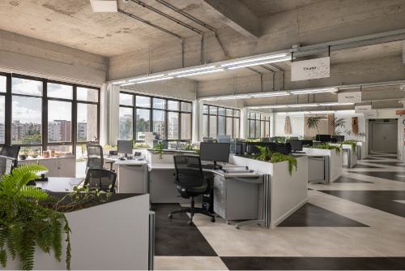
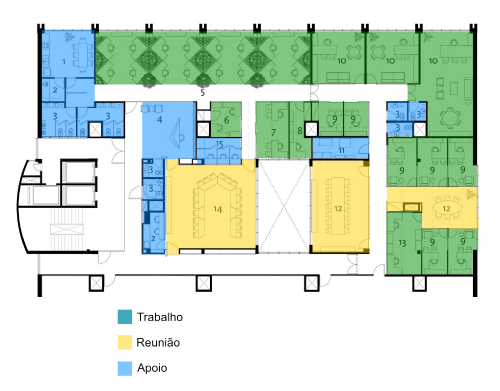

Na unidade curricular Projetar design de interiores residencial, você estudou como os conceitos de leiaute são aplicados no design de interiores de uma casa ou um apartamento, vendo as diversas opções de conexões, dimensionamentos, funcionalidades etc. que podem acontecer. Esses conceitos, aplicados de maneira residencial, também podem ser abordados em ambientes corporativos e escritórios.

Escritório da Organização do Tratado de Cooperação Amazônica (CoDA Arquitetura)
Fonte: França apud ArchDaily (2020b)
Escritório em planta livre. Ao fundo da imagem à esquerda, janelas mostram a cidade. Ao lado da janela, uma série de estações de trabalho branco e cinza com cadeiras pretas. Vegetações estão colocadas em cima da mesa. No teto, vigas em concreto; no piso, trabalho em cerâmica branca e preta.
Aqui, na unidade curricular Projetar design de interiores corporativo, os focos serão escritórios, salas, empresas etc. Muitos dos conceitos vistos anteriormente se repetirão aqui, mas tenha cuidado: em ambientes corporativos, o designer deve compreender os aspectos e os objetivos do local de trabalho (Gibbs, 2009), além de se aprofundar em questões ergonômicas. Nesta unidade curricular, discorre-se novamente sobre ambientes, setores, acessos, fluxos, dimensionamento e funcionalidade.
Na unidade curricular Estruturar concepção projetual de design de interiores, você viu que uma das maneiras de dividir um ambiente corporativo é por meio setores de trabalho conjunto, trabalho individual, espaços de convívio e assim por diante.
Exemplo de setorização – planta baixa do escritório da Organização do Tratado de Cooperação Amazônica
Fonte: Adaptado de ArchDaily (2020a)
Planta baixa de um escritório de médio porte pintada com as cores amarelo (representando espaços de reuniões), vermelho (representando área de trabalho geral), verde (representando diretoria e salas individuais) e azul (representando recepção, circulação e áreas técnicas). A planta baixa é no formato de um retângulo com um vazio central. Na parte superior esquerda, a área de trabalho geral. À direita, diretoria e salas individuais. Próximo ao vazio central, duas grandes salas de reuniões. Entre a sala de reuniões e os outros espaços, fica a circulação geral. Na esquerda/meio da planta baixa fica a recepção, e as áreas técnicas à direita.
Na unidade curricular Estruturar concepção projetual de design de interiores, essa setorização proporcionou um entendimento geral de um funcionamento de um ambiente de trabalho. Meel (2012) aprofunda e atualiza esse conceito, dividindo os ambientes corporativos em três grandes setores:
Logo, a setorização desse mesmo escritório ficaria da seguinte maneira:

Setorização, segundo a classificação de Meel (2012), do escritório da Organização do Tratado de Cooperação Amazônica
Fonte: Adaptado de ArchDaily (2020a)
Planta baixa de um escritório de médio porte pintada com as cores verde (representando espaços de trabalho), amarelo (representando espaços de reunião) e azul (representando espaços de apoio). A planta baixa é no formato de um retângulo com um vazio central. Na parte superior esquerda, a área de trabalho geral. À direita, diretoria e salas individuais. Próximo ao vazio central, duas grandes salas de reuniões. Entre a sala de reuniões e os outros espaços, fica a circulação geral. Na esquerda/meio da planta baixa fica a recepção, e as áreas técnicas à direita.
Os três setores apresentados podem se subdividir em diversos ambientes, como escritório aberto, estação de trabalho, salas de reunião, banheiros, copa e assim por diante. Essa setorização é importante porque funciona para qualquer escala de escritório: uma pequena sala corporativa acabará tendo essas três funções, mesmo que sem uma separação física. Já grandes empresas e escritórios terão esses setores com tamanhos avantajados, divisões específicas e circulações que comunicam os ambientes.
Reflita: faz sentido dividir um escritório de 30 m² em uma sala de reuniões, uma sala individual e uma sala de ambiente de trabalho? Vale a pena setorizar ambientes com paredes quando se quer integração? É possível ter uma sala de reuniões sem fechamento acústico, quando se precisa de privacidade?
No contexto de leiaute corporativo, aborda-se novamente a organização do ambiente em planta baixa. As opções no mundo corporativo são diversas. Estações de trabalho podem ser abertas ou fechadas; salas de reunião podem ser privadas e sérias ou abertas e modernas; ambientes de apoio têm peculiaridades muito específicas.
A seguir, veja como os principais ambientes se organizam com base em sua funcionalidade, além de entender os principais dimensionamentos que devem ser levados em consideração ao projetar cada um desses espaços.
Clique ou toque para visualizar o conteúdo.
aaaaaaaaaa
aaaaaaaaaa
aaaaaaaaaa
aaaaaaaaa
aaaaaaaaaa
aaaaaaaaaa
aaaaaaaaaa
aaaaaaaaa
aaaaaaaaaa
aaaaaaaaaa
aaaaaaaaaa